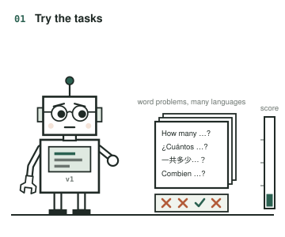
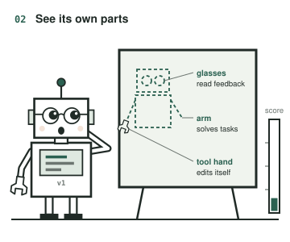
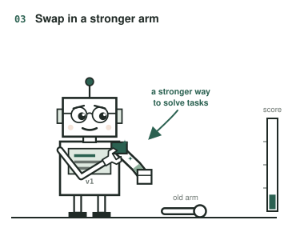
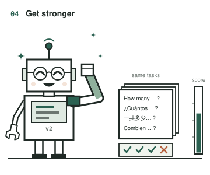
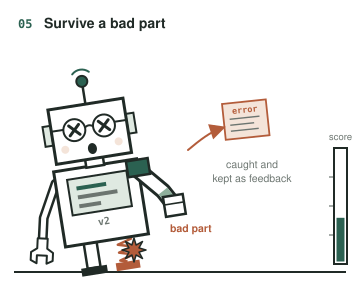
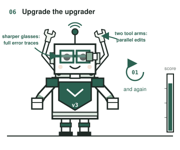

ACL 2025 · Main ConferenceSelf-modifying agents
Gödel Agent: A Self-Referential Agent Framework for Recursively Self-Improvement
Gödel Agent can inspect and rewrite its own running code, using task feedback to revise both its problem-solving policy and the procedure that improves it.
- Result
- MGSM accuracy 64.2% for Gödel-base vs 53.4% for Meta Agent Search, both executing tasks with GPT-3.5 in a closed-book setting.
- New vs prior
- Meta Agent Search and natural-language-gradient methods improve agents through a fixed, human-designed meta-learning routine; this work lets the agent inspect and rewrite that routine as well as its task policy.
- Limitation
- Gains on DROP, MMLU and GPQA have overlapping 95% confidence intervals, and 14% of 100 MGSM optimization trials ended below the initial policy.
A robot that rebuilds itself
Its glasses stand for how it reads feedback, its arms for how it solves tasks, and its wrench hand for the routine that edits it. That last part is editable too.

01The agent runs its current policy on validation tasks and gets back scores and errors.

02It inspects its own running code: the policy that solves tasks and the routine that edits the agent.

03It writes a new policy and patches it into itself while it keeps running.

04The revised policy is evaluated on the same tasks.

05Some edits break things. Error handling catches the failure and returns it as feedback.

06The improvement routine is code too, so it can be revised: reported changes include keeping full error traces and optimizing in parallel.
What if the procedure that improves an agent could improve too?
A prompt optimizer revises the solver but keeps its own search routine fixed, and that routine decides which changes to propose, how to test them and how to recover from errors. Gödel Agent makes this routine editable too: the agent can rewrite both the code that solves tasks and the code that organizes its next revisions.
It can then change a prompt, add a verifier, replace an LLM call with an algorithm, or improve the diagnostics behind its next edit. The question is whether access to its own implementation helps an agent find better policies from task feedback.
Closest prior work
The paper groups earlier agents into hand-designed agents, which iterate over fixed modules, and meta-learning optimized agents, such as natural-language-gradient methods (Zhou et al., 2024) and Meta Agent Search (Hu et al., 2024), which update modules through a pre-defined meta-learning routine whose human priors cannot change at inference time. Gödel Agent makes that routine part of its own editable code. Unlike the Gödel machine (Schmidhuber, 2003), which relies on a proof searcher, or STOP (Zelikman et al., 2023), which recursively improves an optimizer for code generation, it uses an LLM to propose and apply modifications to the whole running agent.
A strong gain in multilingual math, with smaller gains elsewhere
64.2 vs 53.4
MGSM accuracy (%) · Gödel-base vs Meta Agent Search
Both execute tasks with GPT-3.5 (closed-book); GPT-4o proposes Gödel Agent’s code edits. Gains on DROP, MMLU and GPQA are smaller, with overlapping confidence intervals.
64.2 → 49.4
MGSM accuracy (%) · without error handling
Removing the mechanism that returns failed edits as feedback causes the largest drop in the ablation study.
An LLM-based run: gains, failures, reverts
In this Game of 24 run, code-assisted verification and retrying with more data gave the largest gains; other edits failed or were reverted. The switch to search above is a different run.
GPT-4o proposes the code changes, while the optimized policies and all baselines execute tasks with GPT-3.5. The benchmarks cover multilingual math (MGSM), reading comprehension (DROP), general knowledge (MMLU) and graduate-level science (GPQA).
The search is also cheaper: the paper reports about $15 for a complete 30-iteration run across the four datasets, against $300 for Meta Agent Search. Gödel-free, which may call stronger models while solving tasks, is reported separately below.
All four tasks, with uncertainty visible
Against Meta Agent Search the MGSM gap is +10.8 percentage points; on DROP, MMLU and GPQA the confidence intervals overlap.
Table 1 · reported score ± 95% bootstrap confidence interval. DROP reports F1; the other columns report accuracy (%).
| Method | DROP | MGSM | MMLU | GPQA |
|---|---|---|---|---|
| Chain-of-Thought | 64.2 ± 0.9 | 28.0 ± 3.1 | 65.4 ± 3.3 | 29.2 ± 3.1 |
| COT-SC | 64.4 ± 0.8 | 28.2 ± 3.1 | 65.9 ± 3.2 | 30.5 ± 3.2 |
| Self-Refine | 59.2 ± 0.9 | 27.5 ± 3.1 | 63.5 ± 3.4 | 31.6 ± 3.2 |
| LLM Debate | 60.6 ± 0.9 | 39.0 ± 3.4 | 65.6 ± 3.3 | 31.4 ± 3.2 |
| Step-back-Abs | 60.4 ± 1.0 | 31.1 ± 3.2 | 65.1 ± 3.3 | 26.9 ± 3.0 |
| Quality-Diversity | 61.8 ± 0.9 | 23.8 ± 3.0 | 65.1 ± 3.3 | 30.2 ± 3.1 |
| Role Assignment | 65.8 ± 0.9 | 30.1 ± 3.2 | 64.5 ± 3.3 | 31.1 ± 3.1 |
| Meta Agent Search | 79.4 ± 0.8 | 53.4 ± 3.5 | 69.6 ± 3.2 | 34.6 ± 3.2 |
| Gödel-base | 80.9 ± 0.8 | 64.2 ± 3.4 | 70.9 ± 3.1 | 34.9 ± 3.3 |
How the comparison was run
- Agent doing the optimization
- GPT-4o-2024-05-13
- Constrained policies and baselines
- GPT-3.5-turbo-0125; closed-book execution
- Search protocol
- 6 independent cycles per task; up to 30 iterations per cycle on validation data, then test evaluation
- Validation / test questions
- 128 / 800 for DROP, MGSM and MMLU; 32 / 166 for GPQA, with GPQA evaluated five times
What about the higher Gödel-free scores?
DROP F1 90.5 ± 1.8, MGSM accuracy 90.6 ± 2.0, MMLU accuracy 87.9 ± 2.2, GPQA accuracy 55.7 ± 3.1. This version may call stronger models, including GPT-4o, while solving tasks. Its scores measure unrestricted tool use and belong to a different comparison from Gödel-base.
What makes continued improvement possible?
An agent that rewrites its own code needs a way to observe and recover from bad edits. Removing thinking before acting costs almost as much.
- Full system64.2%
- Without thinking before acting50.8%
- Without error handling49.4%
- Without code-running tool57.1%
- Without LLM-calling tool60.4%
Table 2 and the full-system MGSM score from Table 1. Bars start at zero; no per-ablation confidence interval is supplied in Table 2.
Self-improvement is not monotonic
Across 100 MGSM optimization trials:
- 92%
- encountered a temporary performance drop
- 14%
- finished below the initial policy
- 4%
- terminated unexpectedly
These are different, potentially overlapping events—not three parts of a whole. Editing the improvement procedure can also break the ability to continue improving.
Table 1 ↗ · Table 2 ↗ · Robustness ↗ · Experimental protocol ↗
Scope. The experiments support a broader empirical search over agent programs. They do not establish monotonic improvement, global optimality, or open-ended gains beyond current model capabilities. Read the study ↗
Research summary
The rapid advancement of large language models (LLMs) has significantly enhanced the capabilities of agents across various tasks. However, existing agentic systems, whether based on fixed pipeline algorithms or pre-defined meta-learning frameworks, cannot search the whole agent design space due to the restriction of human-designed components, and thus might miss the more optimal agent design. In this paper, we introduce Gödel Agent, a self-evolving framework inspired by the Gödel Machine, enabling agents to recursively improve themselves without relying on predefined routines or fixed optimization algorithms. Gödel Agent leverages LLMs to dynamically modify its own logic and behavior, guided solely by high-level objectives through prompting. Experimental results on multiple domains demonstrate that the implementation of Gödel Agent can achieve continuous self-improvement, surpassing manually crafted agents in performance, efficiency, and generalizability.
Full paper ↗Citation BibTeX
@inproceedings{yin-etal-2025-godel,
title = {G{\"o}del Agent: A Self-Referential Agent Framework for Recursively Self-Improvement},
author = {Yin, Xunjian and Wang, Xinyi and Pan, Liangming and Lin, Li and Wan, Xiaojun and Wang, William Yang},
booktitle = {Proceedings of the 63rd Annual Meeting of the Association for Computational Linguistics (Volume 1: Long Papers)},
month = jul,
year = {2025},
address = {Vienna, Austria},
publisher = {Association for Computational Linguistics},
url = {https://aclanthology.org/2025.acl-long.1354/},
doi = {10.18653/v1/2025.acl-long.1354},
pages = {27890--27913}
}